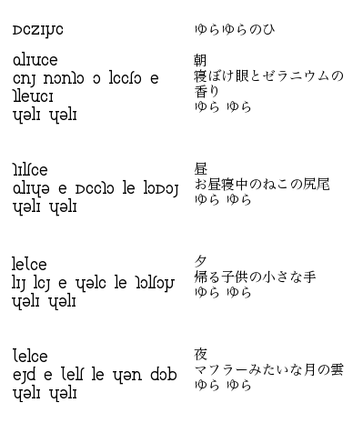
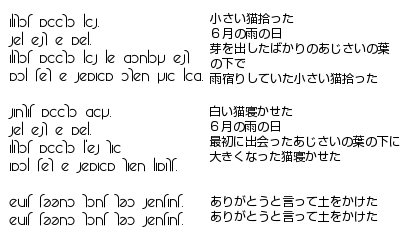
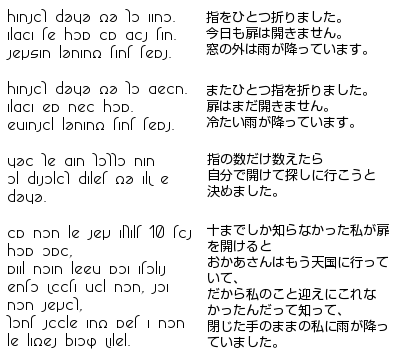

|
단시
흔들거림의 날

아침
잠 덜 깬 눈과 제라늄의
향기
흔들 흔들
낮
낮잠 자는 고양이 꼬리
흔들 흔들
저녁
집에 가는 어린아이의 작은 손
흔들 흔들
밤
목도리 같은 달의 구름
흔들 흔들
수국

작은 고양이를 주웠다
6월의 비 오는 날
막 새싹을 틔운 수국 이파리
아래서
비를 긋던 작은 고양이를 주웠다
하얀 고양이를 뉘였다
6월의 비 오는 날
처음 만났던 수국 이파리 아래에
커진 고양이를 뉘였다
고맙다고 말하면서 흙을 덮었다
고맙다고 말하면서 흙을 덮었다
문

손가락을 하나 접었습니다.
오늘도 문은 열리지 않습니다.
창 밖에는 비가 내립니다.
손가락을 하나 더 접었습니다.
문은 아직 열리지 않습니다.
차가운 비가 내립니다.
손가락 개수만큼 헤아리고 나면
스스로 열고 찾으러 가려고
마음먹었습니다.
열까지밖에 몰랐던 내가 문을 열자
어머니는 벌써 하늘나라에 가 계셔서
그래서 나를 데리러 올 수
없었다는 걸 알았고
주먹 쥔 나를 향해 비가 내리고
있었습니다.
|